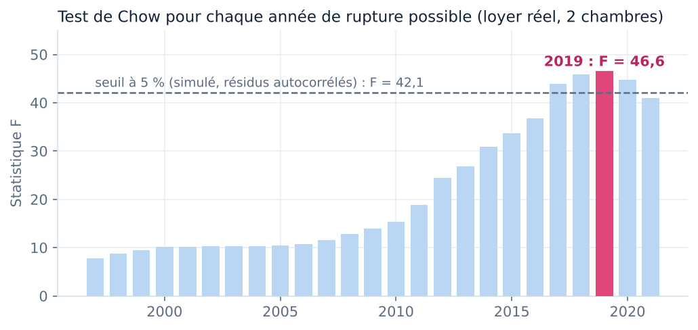
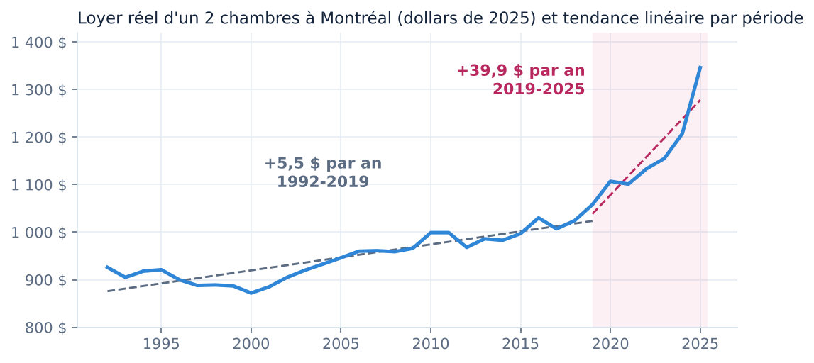
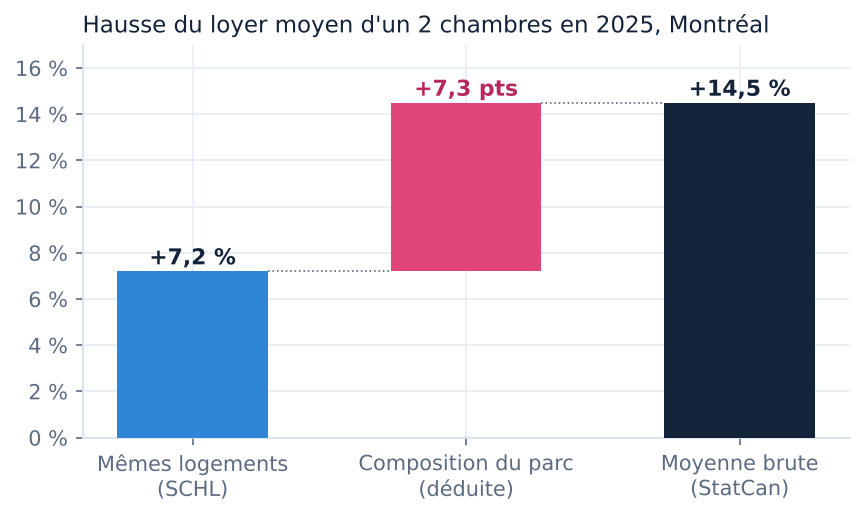
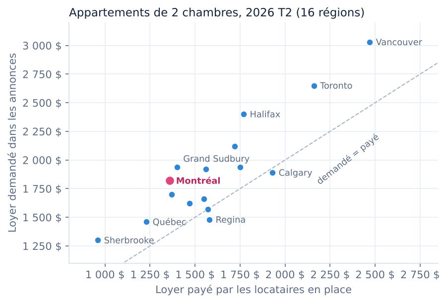
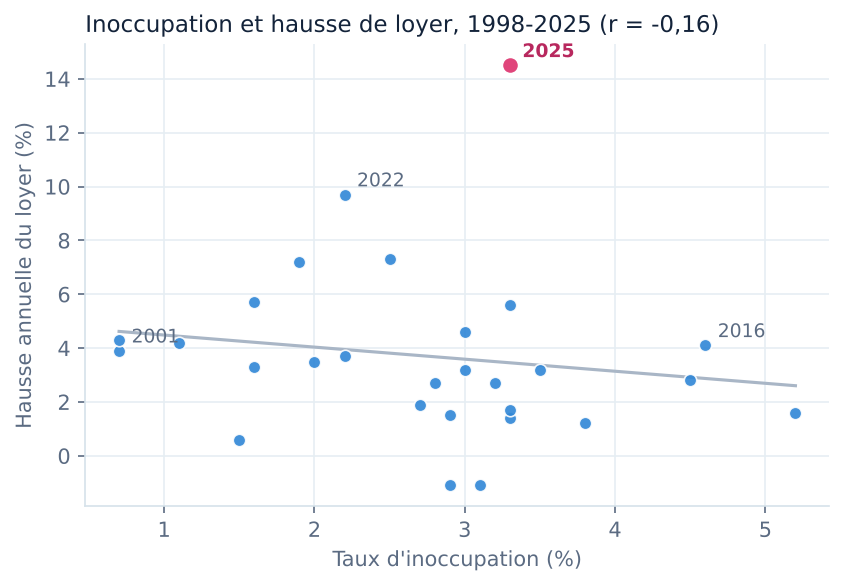

Huit scripts et deux modules transforment les données officielles en tables propres, en base SQL, en classeur Excel, en cartes, en analyses et en site. Chaque étape contrôle la précédente. Et deux pièces maîtresses : un évaluateur de loyer public, conçu pour les gestionnaires immobiliers, et un test statistique qui vérifie que la cassure de 2019 n'est pas une illusion.
Pipeline créé avec l'IA
Programme en ligne de commande
argparse
Test de Chow
Simulation Monte Carlo
pandas
numpy
API REST (WDS)
Contrôles qualité
Régression linéaire
Projection cartographique
openpyxl
matplotlib
L'élément Python du projet
La cassure de 2019 est-elle réelle, ou est-ce moi qui la vois ?
Deux droites tracées de part et d'autre de 2019 ont l'air convaincantes. Mais j'ai choisi 2019 en regardant le graphique, et les loyers d'une année ressemblent à ceux de l'année précédente : deux raisons de se méfier d'un test trop facile. J'ai donc codé le test en trois étapes.
2019année de rupture désignée par les données, sur 25 années candidates (1997 à 2021)
F = 46,6statistique de Chow en 2019 : deux droites expliquent bien mieux les loyers qu'une seule
6 × 10⁻¹⁰p-value du test classique : trop optimiste, elle ignore la recherche de l'année et l'autocorrélation
p = 0,037p-value corrigée par 20 000 simulations sans rupture (résidus autocorrélés, ρ = 0,81)
Ce que dit le test
1. Test de Chow : compare une droite unique sur 1992-2025 à deux droites séparées à une année donnée. 2. Recherche de la rupture : le test est calculé pour chaque année de 1997 à 2021 ; le F le plus élevé tombe en 2019 (2018 et 2020 suivent de près : la cassure se situe autour de 2019). 3. p-value honnête : je simule 20 000 séries sans rupture, avec la même tendance et des écarts autocorrélés comme les vrais, et je compte combien produisent un F maximal aussi grand. Résultat : 0,037. La rupture reste significative au seuil de 5 %, mais beaucoup moins spectaculairement que ne le laissait croire le test classique.
numpy.linalg.lstsqscipy.statsAR(1)Monte Carlo vectorisé

def chow_f(t, Y, c):
"""Statistique F de Chow pour une rupture à l'année c (k = 2 paramètres : constante et pente)."""
Y = np.atleast_2d(Y)
n, k = len(t), 2
before = t < c
r_one = _rss(t, Y)
r_two = _rss(t[before], Y[:, before]) + _rss(t[~before], Y[:, ~before])
return ((r_one - r_two) / k) / (r_two / (n - 2 * k))
# Hypothèse nulle : une seule tendance, résidus AR(1) (rho estimé sur les résidus, donc prudent)
slope, intercept = np.polyfit(t, y, 1)
e = y - (slope * t + intercept)
rho = float(np.corrcoef(e[:-1], e[1:])[0, 1])
sigma = float(np.std(e[1:] - rho * e[:-1], ddof=1))
rng = np.random.default_rng(seed)
eps = rng.normal(0, sigma, (n_sim, n))
u = np.empty_like(eps)
u[:, 0] = eps[:, 0] / np.sqrt(1 - rho ** 2)
for i in range(1, n):
u[:, i] = rho * u[:, i - 1] + eps[:, i]
sims = slope * t + intercept + u
sup_f = np.max([chow_f(t, sims, c) for c in CANDIDATES], axis=0)
p_sim = float((sup_f >= f_by_year.max()).mean())
Limite : avec 34 observations annuelles, le test confirme une cassure, pas sa cause. Le seuil simulé dépend du modèle AR(1) choisi pour les écarts ; le ρ est estimé sans tenir compte de la rupture, ce qui rend le test prudent.
Un programme public
Un évaluateur de loyer, téléchargeable et sans dépendance
Le besoin vient du terrain : une agence gère une liste de logements et veut savoir, pour chacun, s'il est sous le marché, ce que le marché a fait depuis le début du bail, et ce qu'une relocation rapporterait. J'ai donc rendu l'analyse réutilisable : un programme en ligne de commande qui évalue un logement, ou un fichier CSV complet, à partir des mêmes données officielles que le site. Python 3 suffit : aucune bibliothèque à installer.
Ce qu'il calcule
Position face à la moyenne SCHL 2025 : sous le marché, dans le marché (± 5 %) ou au-dessus.
Hausse du marché depuis le début du bail, inflation, hausse réelle.
Potentiel de relocation d'un 2 chambres : l'écart avec le prix des annonces.
Taux d'effort du locataire (seuil SCHL de 30 %), si le revenu est fourni.
En mode fichier : la synthèse du portefeuille, comme pour une liste d'agence.
Script, données, exemple fictif de liste d'agence et mode d'emploi. Sortie texte ou JSON (--json) pour brancher le résultat sur un autre outil. Le programme situe un loyer ; il ne fixe pas un prix.
À l'essai sur l'exemple fourni
$ python3 evalue_loyer.py --fichier annonces_exemple.csv
[...]
[Rosemont-302]
Logement : 2 chambres à 1 510 $ par mois, bail commencé en 2023
Moyenne SCHL 2025 (2 chambres) : 1 346 $ → écart +164 $ (+12,2 %) : AU-DESSUS DU MARCHÉ
Depuis 2023, le marché a monté de +22,8 % (inflation +5,4 %, hausse réelle +16,5 %)
Annonces (2e trimestre 2026) : 1 820 $ → potentiel de relocation +310 $ par mois
Taux d'effort : 34,8 % du revenu, au-dessus du seuil SCHL de 30 %
[HoMa-401]
Logement : 1 chambre à 1 245 $ par mois, bail commencé en 2024
Moyenne SCHL 2025 (1 chambre) : 1 131 $ → écart +114 $ (+10,1 %) : AU-DESSUS DU MARCHÉ
Depuis 2024, le marché a monté de +7,6 % (inflation +2,6 %, hausse réelle +4,9 %)
Taux d'effort : 38,3 % du revenu, au-dessus du seuil SCHL de 30 %
[HoMa-402]
Logement : 3 chambres à 2 150 $ par mois, bail commencé en 2024
Moyenne SCHL 2025 (3 chambres) : 1 626 $ → écart +524 $ (+32,2 %) : AU-DESSUS DU MARCHÉ
Depuis 2024, le marché a monté de +9,3 % (inflation +2,6 %, hausse réelle +6,5 %)
Taux d'effort : 29,3 % du revenu, sous le seuil SCHL de 30 %
========================================================================
Synthèse du portefeuille : 8 logements · 3 sous le marché, 0 dans le marché, 5 au-dessus
Écart médian à la moyenne SCHL : +7,8 %
Potentiel de relocation (2 ch. sous le prix des annonces) : +1 380 $ par mois
Potentiel de relocation calculé pour les 2 chambres seulement, seul type couvert par les annonces agrégées.
La fonction d'évaluation (extraite du script publié)
def evalue(m: Marche, loyer: float, unit: str, annee_bail: int, revenu: float | None = None) -> dict:
"""Évalue un logement et renvoie un dictionnaire de résultats (toutes les valeurs sont dérivées)."""
if loyer <= 0:
raise ValueError(f"loyer invalide : {loyer}")
if not (m.annees[0] <= annee_bail <= ANNEE_REF):
raise ValueError(f"année de bail hors période couverte ({m.annees[0]}-{ANNEE_REF}) : {annee_bail}")
moyenne = m.moyenne(ANNEE_REF, unit)
ecart_pct = loyer / moyenne - 1
position = ("dans le marché" if abs(ecart_pct) <= SEUIL_MARCHE
else "sous le marché" if ecart_pct < 0 else "au-dessus du marché")
hausse = moyenne / m.moyenne(annee_bail, unit) - 1
inflation = m.ipc[ANNEE_REF] / m.ipc[annee_bail] - 1
r = {
"loyer": round(loyer, 2), "type": TYPES[unit], "annee_bail": annee_bail,
"moyenne_2025": round(moyenne), "ecart_dollars": round(loyer - moyenne), "ecart_pct": round(ecart_pct * 100, 1),
"position": position,
"hausse_marche_depuis_bail_pct": round(hausse * 100, 1),
"inflation_depuis_bail_pct": round(inflation * 100, 1),
"hausse_reelle_marche_pct": round(((1 + hausse) / (1 + inflation) - 1) * 100, 1),
}
if unit == "2ch":
r["loyer_demande_annonces"] = round(m.demande_2ch)
r["potentiel_relocation_dollars"] = round(m.demande_2ch - loyer)
if revenu and revenu > 0:
effort = loyer * 12 / revenu
r["taux_effort_pct"] = round(effort * 100, 1)
r["abordable_seuil_30pct"] = effort <= SEUIL_EFFORT
return r
Quatre analyses qui changent la lecture des chiffres
Régression linéaire
La hausse a changé de régime en 2019
Une droite ajustée sur 1992-2019 donne 5,5 $ de hausse réelle par an (R² = 0,79). Sur 2019-2025, la pente passe à 39,9 $ par an (R² = 0,82) : 7,3 fois plus rapide. Ce n'est pas une année exceptionnelle, c'est une nouvelle tendance.
numpy.polyfitR²dollars constants

Décomposition
La moitié de la hausse de 2025 vient de la composition du parc
La moyenne brute de Statistique Canada monte de 14,5 %. La SCHL mesure 7,2 % sur les mêmes logements. La différence, 7,3 points (50 % de la hausse), vient des logements qui entrent dans l'enquête ou en sortent, surtout des immeubles neufs plus chers. Retenir le mauvais chiffre surestimerait du double la hausse subie par un locataire.
Rapprochement de sourcesEffet de composition

Comparaison entre régions
Dans 13 régions sur 16, déménager coûte plus cher que rester
Chaque point est une région métropolitaine : le loyer payé par les locataires en place en abscisse, le loyer demandé dans les annonces en ordonnée. Au-dessus de la diagonale, un nouveau locataire paie plus que les locataires en place. Montréal est parmi les écarts les plus forts ; Calgary et Regina sont sous la diagonale.
pivot_tableDernier trimestreNuage de points

Corrélation
L'inoccupation n'explique presque pas les loyers
Corrélation de −0,16 sur 28 années (−0,30 sans 2025). Le sens attendu existe (plus de logements vacants, hausse plus faible), mais la relation est faible et 2025 est une valeur extrême. Avec 28 points annuels, on décrit ; on ne conclut pas à une cause.
corrValeur extrêmeLimite statistique

De la source au site, en neuf commandes
fetch_statcan.pyTélécharge les tableaux officiels par l'API et vérifie chaque valeur
pipeline.pyContrôles, tables de faits et dimensions, loyers réels, carte
build_db.pyBase SQLite, 12 requêtes, comparaison avec Python
build_excel.py + geo.pyClasseur de 1 239 formules et ses deux cartes, générés par openpyxl
figures.py + rupture.pyTest de Chow, régressions, décomposition, figures
python src/fetch_statcan.py # compare data/raw aux tableaux officiels (--mettre-a-jour pour les remplacer)
python src/pipeline.py # data/raw -> data/clean + indicateurs + données de la carte
python src/build_db.py # SQLite + contrôle des 12 requêtes SQL et du dictionnaire
python src/modeles.py # MCD, MLD (depuis la base) et paquet téléchargeable
python src/build_excel.py # classeur Excel (cartes calculées par src/geo.py)
python src/render_excel.py # captures des feuilles
python src/figures.py # analyses, test de Chow (src/rupture.py) et figures
python src/evalue_loyer.py --fichier annonces.csv # le programme public, aussi utilisable seul
python src/build_site.py # les 5 pages du site (docs/)
Ce que fait le code
Extraits tirés directement des scripts du dépôt, au moment de la construction du site.
1. Récupérer les données officielles par l'API
Le service web de Statistique Canada renvoie l'adresse du tableau complet ; le script télécharge le ZIP et lit le CSV en mémoire. Le même code sert à vérifier les données publiées et à les mettre à jour quand la SCHL publie une nouvelle enquête.
urllibJSONzipfile
def download(pid: str) -> pd.DataFrame:
"""Télécharge un tableau complet (CSV dans un ZIP) et le renvoie sous forme de DataFrame."""
with urllib.request.urlopen(urllib.request.Request(WDS.format(pid=pid), headers=UA), timeout=60) as r:
meta = json.load(r)
if meta.get("status") != "SUCCESS":
raise RuntimeError(f"Tableau {pid} : réponse inattendue de l'API : {meta}")
with urllib.request.urlopen(urllib.request.Request(meta["object"], headers=UA), timeout=300) as r:
z = zipfile.ZipFile(io.BytesIO(r.read()))
name = next(n for n in z.namelist() if n.endswith(".csv") and "MetaData" not in n)
df = pd.read_csv(z.open(name), low_memory=False)
df["REF_DATE"] = df["REF_DATE"].astype(str)
return df
2. Valider avant de transformer
Les assertions vérifient l'unicité des clés, des bornes plausibles et la concordance entre deux extractions du même tableau. Une seule erreur et le pipeline s'arrête.
assertduplicatedbetween
def validate(rents, cities, vac, cpi):
# Contrôles de qualité : pas de doublons, pas de valeurs manquantes, bornes plausibles
assert not rents.duplicated(["year", "unit_type"]).any()
assert not cities.duplicated(["year", "geo"]).any()
assert not vac.duplicated(["year", "geo"]).any()
assert rents["value"].between(200, 5000).all()
assert cities["value"].between(200, 5000).all()
assert vac["value"].between(0, 15).all()
# Montréal 2 chambres doit être identique dans les deux extractions du tableau 34-10-0133
a = rents[rents.unit_type == "Two bedroom units"].set_index("year")["value"]
b = cities[cities.geo == "Montreal"].set_index("year")["value"]
assert a.equals(b.loc[a.index]), "Incohérence entre les deux extractions"
assert cpi["year"].is_unique
3. Ramener chaque loyer en dollars de 2025
Le multiplicateur IPC 2025 / IPC de l'année est appliqué à chaque observation ; la variation annuelle est calculée par type de logement avec groupby et pct_change.
Les résultats des requêtes sont comparés aux indicateurs calculés en Python, et deux requêtes sont comparées entre elles. C'est ce contrôle qui m'a montré que Montréal n'est plus la grande ville la moins chère depuis 2020.
sqlite3teststolérance numérique
def check(results, k):
"""Chaque requête qui produit un chiffre publié est comparée au calcul Python."""
r = {x["file"]: x for x in results}
rows = lambda f: r[f]["rows"]
qa = {x[0]: x for x in rows("01_controle_qualite.sql")}
assert qa["fait_loyer"][4] == 0 and qa["ipc_provinces"][4] == 0, qa
var = [x for x in rows("02_variation_par_type.sql") if x[1] == "2 chambres" and x[0] == 2025][0]
assert abs(var[3] - k["hausse_annuelle_2025"]) < 0.05, var
rythme = rows("05_rythme_par_periode.sql")
assert abs(rythme[0][1] - k["hausse_reelle_1992_2019"]) < 0.05 and abs(rythme[1][1] - k["hausse_reelle_2019_2025"]) < 0.05, rythme
villes = rows("06_classement_villes.sql")
assert villes[0][1] == "Montréal" and abs(villes[0][4] - k["hausse_2019_2025_par_ville"]["Montreal"]) < 0.05, villes
# recoupement entre deux requêtes : le rang de Montréal (07) doit découler des loyers 2025 de la requête 06
rang = [x for x in rows("07_rang_montreal_par_annee.sql") if x[0] == 2025][0]
mtl_2025 = [x for x in villes if x[1] == "Montréal"][0][3]
assert rang[2] == 1 + sum(1 for x in villes if x[3] < mtl_2025), rang
reloc = rows("08_prime_de_relocation.sql")[-1]
assert reloc[0] == 2025 and reloc[3] == k["prime_relocation_2025"], reloc
mtl = [x for x in rows("09_demande_vs_paye.sql") if x[1] == "Montréal"][0]
assert mtl[6] == k["mtl_ecart_dernier"] and abs(mtl[7] - k["mtl_ecart_pct_dernier"]) < 0.05, mtl
prov = rows("10_provinces_loyer_inflation.sql")
qc = [x for x in prov if x[1] == "Québec"][0]
assert qc[0] == k["qc_rang_hausse_2025"] and abs(qc[2] - k["qc_hausse_loyer_2025"]) < 0.05, qc
vq = {x[0]: x for x in rows("12_vues_quebec.sql")}
assert vq["Montréal"][3] == k["mtl_ecart_pct_dernier"] and vq["Montréal"][4] == k["qc_hausse_loyer_2025"], vq["Montréal"]
5. Projeter une carte pour Excel
La projection conique conforme de Lambert, avec les paramètres de Statistique Canada, transforme longitudes et latitudes en coordonnées planes. Les contours des provinces, simplifiés par l'algorithme de Ramer-Douglas-Peucker, et la position des villes deviennent des séries de graphique : ce sont les cartes du classeur Excel.
Données brutes jamais modifiées à la main (data/raw) : on peut toujours rejouer la chaîne depuis la source.
Tables au format long et modèle en étoile : les mêmes tables alimentent SQL, Excel, la carte et les graphiques.
Dépendances minimales (pandas, numpy, openpyxl, matplotlib) pour que tout tourne aussi dans Google Colab.
Limites assumées
34 observations annuelles : assez pour décrire, trop peu pour modéliser des causes.
L'effet de composition est déduit par différence entre deux sources ; il n'est pas mesuré directement.
Le script d'API a été testé sur des données simulées au format officiel ; à relancer sur un poste connecté pour la vérification finale.
Analyse pas à pas
Le notebook : les constats refaits en pandas, et deux questions d'immobilier en plus
Un notebook Jupyter exécuté, lisible sans rien installer : il recalcule les trois constats du site à partir des tables propres, puis répond à deux questions d'un gestionnaire immobilier — combien rapporte une relocation, et où l'écart entre loyer affiché et loyer payé est le plus grand parmi les 42 régions du pays. Il se termine par une réconciliation : chaque chiffre recalculé est comparé à celui publié sur le site, et l'exécution échoue au moindre écart.
Six sections
Hausse réelle d'un 2 chambres : 1992-2019 contre 2019-2025, rythme annuel composé.
Montréal face aux cinq autres grandes villes, indice 2019 = 100.
Inoccupation et hausse de loyer : corrélation sur 28 années.
Immobilier · loyer reloué contre loyer moyen : revenu annuel libéré par une relocation.
Le fichier .ipynb s'ouvre dans Google Colab ou VS Code ; il lit les tables depuis le dépôt GitHub quand il n'est pas lancé en local. Bibliothèques : pandas et matplotlib.